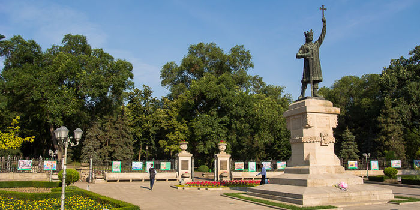
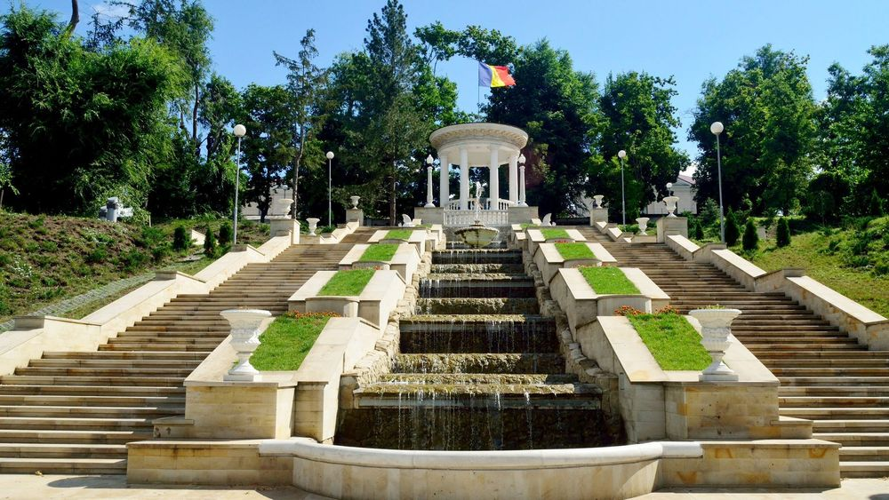
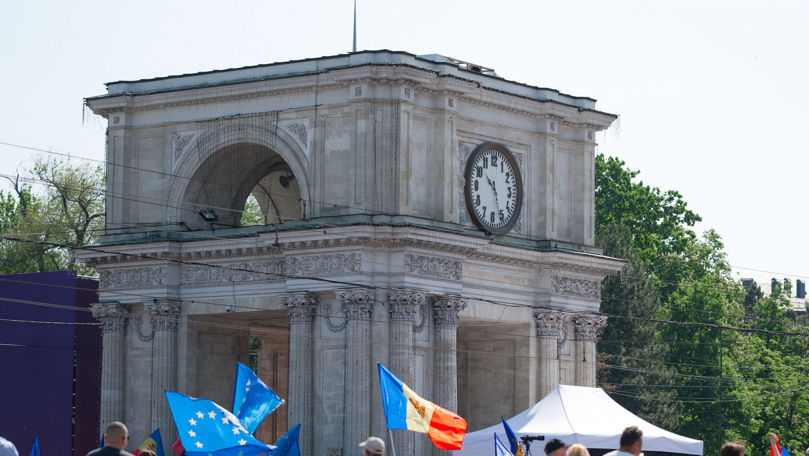

Introduction
My native city is Chișinău, the capital of Moldova. Even though it is not one of the most famous cities in Europe, it has a unique atmosphere that makes people feel welcome. For me, Chișinău is more than just a capital city, it is the place where I grew up and created many memories.
A Surprisingly Green City

One thing that makes Chișinău special is the number of parks and green areas. Many people come here to relax, walk, or spend time with friends after a busy day.
One of the most beautiful places is Valea Morilor Park.

It has a large lake, long stairs, and peaceful walking paths. Especially in the evening, the view there is amazing.Another popular park is Ștefan cel Mare Central Park, located right in the city center. It is often full of students, families, and tourists.
Landmarks That Represent the City

Chișinău also has several landmarks that show its history and culture. One of the most recognizable places is the Triumphal Arch, which is located in the main square of the city. Near it you can see the Nativity Cathedral, an important religious and historical monument. These places are often visited by people who want to understand the city better.
Everyday Life in Chișinău
Life in Chișinău is quite calm compared to many other capitals. People go to school, work, cafés, and markets, and the city has a relaxed rhythm.
During spring and summer, the city becomes more lively. Streets and parks are full of people enjoying the warm weather. Students especially like spending time in the center of the city.
Why Chișinău Is Special to Me
What I like most about Chișinău is that it feels both like a capital city and a comfortable place to live. It is not too crowded, and many areas are quiet and peaceful.
For me, Chișinău is not only a place on the map it is home. And even though it may seem small compared to other capitals, it has its own charm that people can discover if they visit.